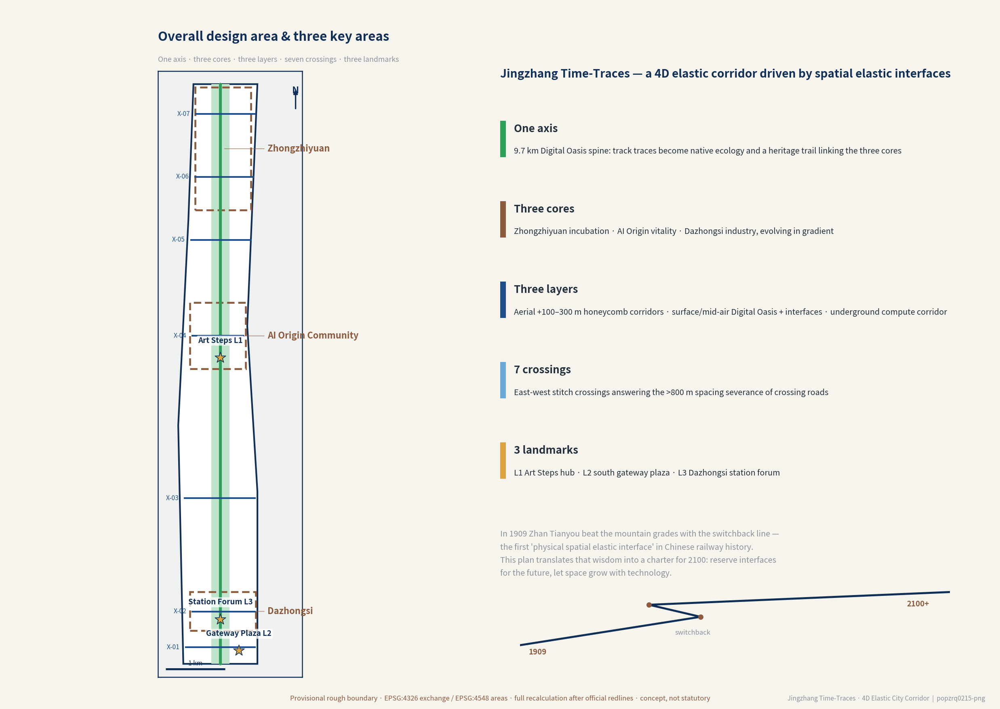
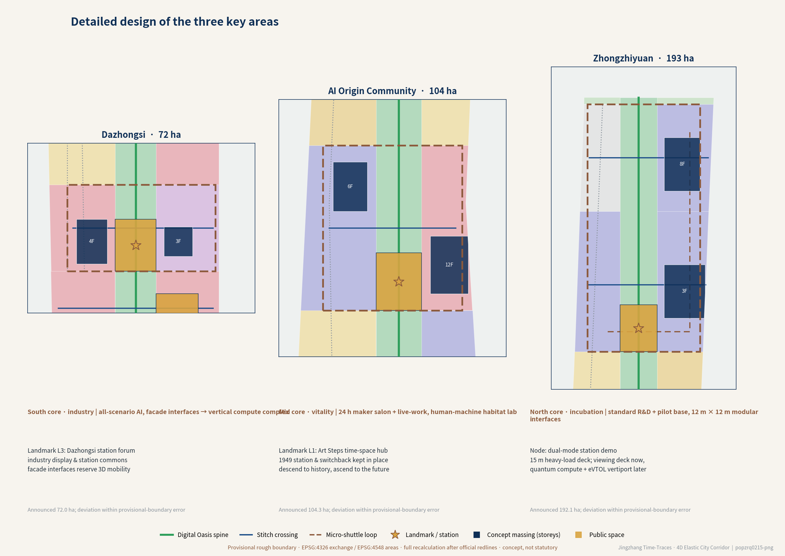
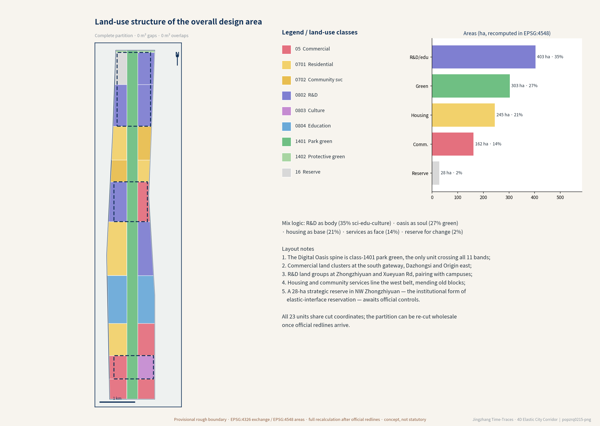
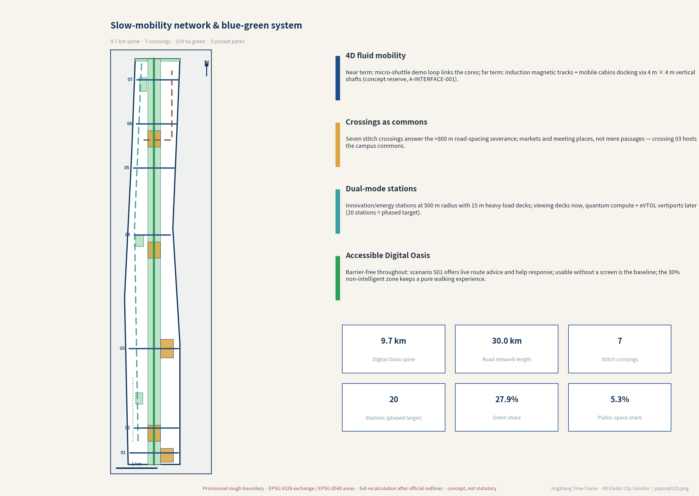
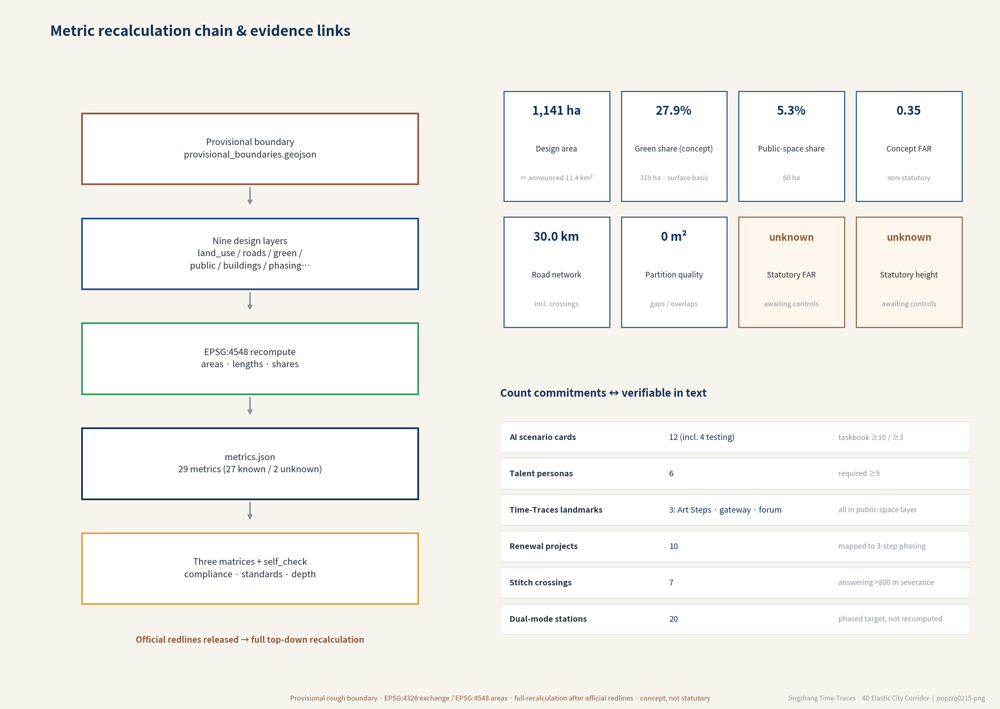

In 1909, Zhan Tianyou's "人"-shaped switchback was the first "physical spatial elastic interface" in Chinese railway history. After the high-speed rail moved underground in 2026, the 9 km surface trace becomes an innovation axis linking three core clusters. The scheme establishes the "Spatial Elastic Interface" as its core technical philosophy, transforming a physical scar into a "super urban smart spine" within the 1909–2100 two-century coordinate system.

| Level | Scope | Depth of work in this package |
|---|---|---|
| Coordinated research area | ≈43.6 km² from the North Fifth Ring to Xizhimenwai Avenue (textual extent, not mapped) | Industry & future-city research, trend diagnosis |
| Overall design area | ≈11.4 km² along the heritage park; recomputed 11,412,825.386 m² from the provisional boundary | Regulatory-plan-depth urban design: land use, mobility, blue-green, massing, phasing |
| Key areas | Zhongzhiyuan 192.1 ha · AI Origin Community 104.3 ha · Dazhongsi 72 ha (announcement figures) | Detailed urban design and elastic-interface placement |

The 1949 Tsinghuayuan station and the switchback alignment are preserved in situ. Near term, a landscape walkway with embedded conduits and structural interfaces rises to an elevated viewing platform; long term, it extends — without demolition — into a low-altitude landing platform and AI Brain launch center: "descend to touch a century of history, ascend to step into future time-space" (heritage boundaries pending, A-HERITAGE-001).

Buildings (conceptual demonstration): seven concept massings, footprint ≈65.5 ha, gross floor area ≈3.97 million m², concept FAR 0.348 — all pre-embedded with spatial elastic interfaces (12 m × 12 m modular interfaces, 4 m × 4 m vertical locomotive shafts); none are statutory controls (A-CONTROLS-001). Retain-renovate-demolish is retain-first: the rail trace and all 12 heritage remnants are preserved.

Near term the micro-shuttle loop links the three cores; long term, ground interfaces activate wireless-induction magnetic tracks, and mobile pods dock into high-rise units via in-building 4 m × 4 m vertical locomotive shafts. Twenty dual-direction stations at a 500 m service radius (phased target) act first as viewing decks, later as quantum computing nodes with eVTOL vertiports (all engineering parameters are conceptual reservations, A-INTERFACE-001). Recomputed road network length: 29.96 km.
The former rail trace becomes a continuous native-ecology and heritage promenade; the three Time-Trace landmarks — L1 Art Steps, L2 Xizhimen Gateway Plaza, L3 Dazhongsi Station Forum — all sit in the public-space layer.
Serving six personas — hard-tech founders, university researchers, young makers, industry engineers, community residents (incl. seniors), cultural visitors. Every scenario has human review and opt-out mechanisms (A-SCENARIO-001). ▲ marks the four industry testing-and-validation scenarios.
| Project | Content | Phase |
|---|---|---|
| R01 Digital Oasis spine | Ecological restoration of the rail trace, heritage promenade | 1 |
| R02 Art Steps hub, stage 1 | Station restoration + walkway + viewing platform | 1 |
| R03 Seven suture crossings | Barrier-free crossings, under-bridge activation | 1 |
| R04 Zhongzhiyuan R&D + pilot base | 12 m × 12 m interfaces pre-embedded | 1 |
| R05 Origin Community maker salon | 24-hour salon, live-work youth community | 1 |
| R06 Dazhongsi consumption hub | Smart-terminal & content consumption, industry showcase | 1 |
| R07 Station prototype + shuttle loop | 15 m heavy-load platform + fast charging | 1–2 |
| R08 Underground computing conduit | 2.5 m × 2.5 m elastic bays reserved | 1–2 |
| R09 Low-altitude corridor + acoustic barrier | Civil-aviation clearance prerequisite | 2 |
| R10 Smart-matrix suspended module demo | First mounted-unit technical validation | 2–3 |

Count commitments: 12 scenario cards (4 testing) · 6 personas · 3 Time-Trace landmarks · 10 renewal projects · 7 suture crossings. Formulas and confidence for every known metric are in metrics.json.
Official announcement (primary basis) · agent taskbook · machine-readable site package · source registry · processed fact pack · provisional boundary & key-area polygons · urban design administration measures · regulatory plan measures · land-use classification guide · interim measures for generative AI services · barrier-free environment law · smart elderly-care policy · public Jingzhang railway history (background only).
| ID | Assumption |
|---|---|
| A-BOUNDARY-001 | Provisional boundary stands in for the official red line; full-chain recomputation on release |
| A-CONTROLS-001 | Statutory FAR/height absent; concept values are non-statutory |
| A-EXISTING-001 | Existing building & tenure data absent; retain-renovate-demolish is directional |
| A-TRANSPORT-001 | Rail and road red lines not obtained; crossing typologies undetermined |
| A-HERITAGE-001 | Heritage boundaries not obtained; no commitment to alter protected fabric |
| A-SCENARIO-001 | AI scenario parameters are design targets; human review & opt-out required |
| A-AOD-001 | "+300% efficiency / ≥65% greening" are 2070–2100+ scenario targets, not recomputed metrics |
| A-INTERFACE-001 | All elastic-interface engineering parameters are conceptual reservations; air corridors need aviation clearance |
| A-NONSMART-001 | The 30% absolutely non-smart zone is a governance commitment target, mapping pending |